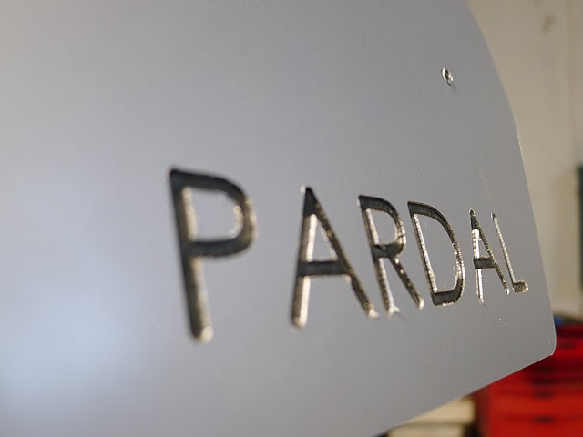

An small multitouch table frame. I've already worked with wood press-fit that's why this time I decided to built something with Alucobond, a three layers sandwich made out of two 0.8 mm aluminium sheets and an inner PE layer.
The Concept
The Sketch Process
Concept and material testing. Angles and size calculation based on a processing sketch found here.The Cad Process
Modeling process done in Rhino 3D. Quick render done in Rhino 3D.The Cam Process
Solid flattening and border extraction for the CAM process. When you work with flat materials is faster to work directly with curves and define the Z heights during the CAM strategy. Tool selection for each milling strategy. Final tool selection.
- 3mm flat mill for hole drilling, face pocketing and engraving
- 6mm flat mill for profile cutting
- 93º vee mill for engraving the folding edges
The CAM strategy was done in Rhino CAM a CAM plugin for Rhino 3D. However this is a really good software for production environments it's not open source and it's not cheap. For small FabLab projects FabModules is a good choice, it's free and you can export G-Code for the ShopBot.
A machine strategy is created for each process. A machine strategy is described by the tool you're using, the CAD geometry you want to produce and the process we want to do with that tool. A tutorial on Rhino CAM can be found on this page at the FabLab BCN wiki.
The final G-Code was exported from Rhino CAM and load on the Precix Milling Machine, a 3 axis CNC milling machine. A tutorial on operating this machine can be found on this page at the FabLab BCN wiki. Compared to Shopbot that's driven by stepper motors working in open loop the Precix is driven by DC motors attached to optical encoders in a closed loop (servos). Everything is run by a real-time Linux OS. However the Precix mechanical design seems less robust that the Shopbot and it has a smaller router, it usually achives better results on most soft materials.

Fist assembly tests.